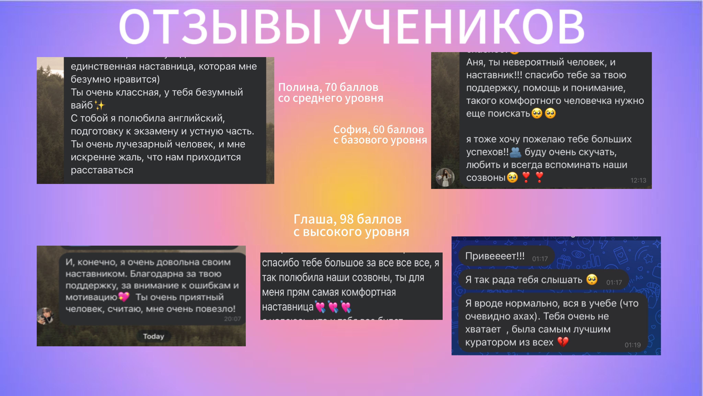

Anna Vorobyeva
English Language Educator & Researcher
HSE University, Saint Petersburg
About Me

Academic Background
I am currently pursuing my undergraduate degree at National Research University Higher School of Economics (HSE) in Saint Petersburg, Russia, in a bilingual Russian-English program. Concurrently, I am completing a minor in "Language, Culture, and Teaching Foreign Languages" entirely in English, which will confer upon me the qualification of English Language Teacher.
My academic journey in English language studies spans 13 years, beginning with intensive coursework at the People's University of Veliky Novgorod, where I progressed from B2 to C1+ proficiency levels.
Professional Experience
I have accumulated four years of teaching experience in both individual and group formats. My professional background includes serving as an English Language Curator at "EGELAND," an online school specializing in preparation for the Unified State Exam (EGE).
Achievements
- Graduated from secondary school with honors in English Language Studies
- Scored 92/100 on the Unified State Exam in English, with maximum points in the speaking section
- Participated in two international language immersion programs, practicing with native speakers from Ghana and Nigeria
- Engaged in five years of private instruction with qualified tutors, including native speakers
- Currently studying Spanish language entirely through English medium instruction
Student Outcomes
My students have achieved notable success on the Unified State Exam, with scores including: 100, 98, 88, 78, and 73 points.
Teaching Philosophy
Student-Centered Learning
I believe that effective language acquisition occurs when instruction is tailored to individual learning styles, goals, and interests. Each student possesses unique strengths and challenges, and my role is to create a supportive environment where they can progress at their own pace while being appropriately challenged.
Communicative Competence
Language learning extends beyond grammatical accuracy to encompass authentic communication. I emphasize real-world application through interactive activities, meaningful discourse, and exposure to genuine materials, ensuring students develop practical language skills they can apply in academic, professional, and personal contexts.
Cultural Integration
Language and culture are inseparable. My teaching incorporates cultural contexts, diverse perspectives, and authentic materials from English-speaking countries worldwide. This approach fosters not only linguistic proficiency but also intercultural competence and global awareness.
Evidence-Based Methodology
I integrate contemporary research in second language acquisition with proven pedagogical practices. My approach combines structured grammar instruction, vocabulary development, skills practice, and technology-enhanced learning to create comprehensive, effective lessons.
Portfolio & Testimonials

Professional Credentials
- Education: HSE University, Saint Petersburg (Expected graduation: 2027)
- Qualification: English Language Teacher (in progress)
- Language Proficiency: C1+ (CEFR)
- Teaching Experience: 4 years
- Specializations: Exam Preparation (EGE/OGE), Academic English, Business English, Conversational English
Areas of Expertise
My Lessons
A glimpse into the diverse materials and methodologies employed in my teaching practice

Vocabulary Development
Systematic approaches to lexical acquisition, including semantic mapping, collocation studies, and context-based learning strategies.

Authentic Media Analysis
Utilizing films and video content to develop listening comprehension, cultural understanding, and natural language patterns.

Critical Discussion
Facilitating analytical conversations about cinema to enhance speaking fluency, critical thinking, and argumentation skills.

Academic Reading
Working with contemporary articles and scholarly texts to develop reading strategies, critical analysis, and academic vocabulary.
Instructional Materials & Technology
My lessons incorporate a variety of resources and digital platforms to enhance learning:
- MTS Link – Virtual classroom platform
- Buildin AI – Artificial intelligence-assisted learning tools
- Miro – Collaborative visual workspace
- Quizlet – Interactive flashcards and study games
- YouTube – Educational video content
- International textbooks and academic publications
- Contemporary news articles and media sources
- Custom-designed instructional materials
Contact Information
Get in Touch
For inquiries regarding tutoring services, academic collaboration, or professional opportunities, please feel free to contact me.
Availability
Individual and group sessions available. Flexible scheduling to accommodate different time zones and academic commitments.